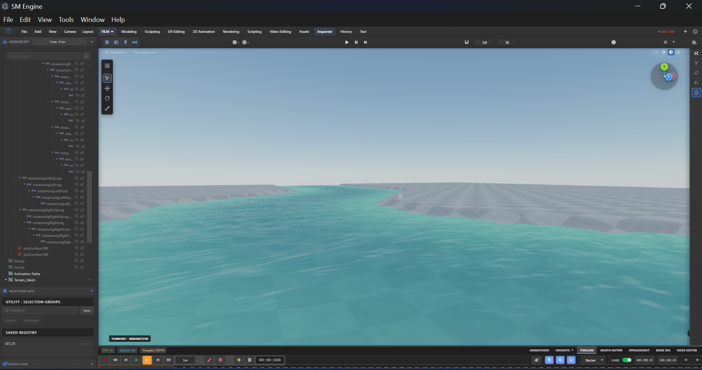
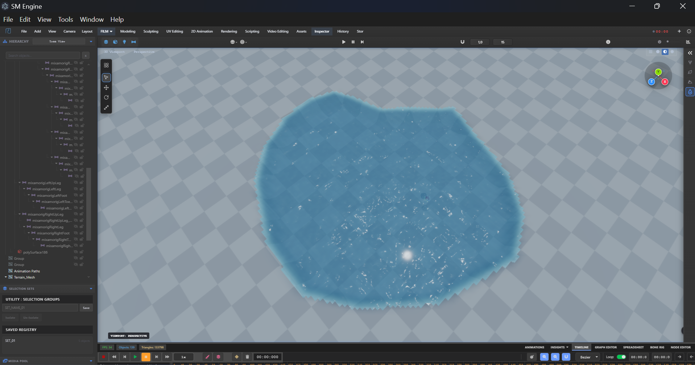
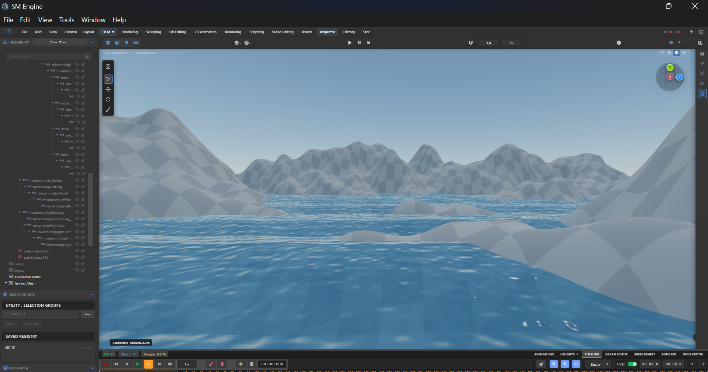
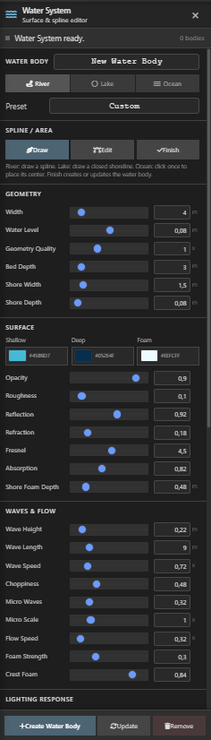

Water System
The TerrainAwareWaterSystem paints living water directly onto your terrain. Click a path of points on the landscape and the system extrudes a flowing river or a closed lake/ocean body with animated waves, foam, reflections and refraction — and it automatically carves the terrain bed underneath.
Workflow



- Create a terrain in the Terrain Sculpting workspace (the water raycast needs a terrain surface to snap to).
- Draw Path — click points on the terrain surface. A dashed line previews the Catmull-Rom path; each click drops a visible control sphere.
- Press Enter to finish, Escape to cancel, Ctrl+Z to undo the last point.
- Adjust — enter edit mode and drag the control spheres to reshape the path.
- Click Create Water in the floating toolbar to build the body (river = open path, anything else = closed polygon).
Water Types & Presets
waterType selects the geometry strategy: river (open, flowing path with
side banks)
or closed types such as ocean / lake (closed shape at the average path
height).
One-click presets cover common looks:
| Preset | Type | Wave H. | Wave Spd. | Freq. | Flow | Foam | Transp. | Width | Depth |
|---|---|---|---|---|---|---|---|---|---|
| Calm River | river | 0.06 | 0.45 | 0.09 | 0.6 | 0.2 | 0.82 | 3.5 | 1.1 |
| Fast River | river | 0.18 | 2.1 | 0.17 | 1.8 | 0.85 | 0.68 | 4.5 | 1.8 |
| Tropical Ocean | ocean | 0.12 | 0.85 | 0.07 | 0.35 | 0.35 | 0.86 | 8.0 | 2.0 |
| Stormy Sea | ocean | 0.42 | 2.9 | 0.14 | 1.0 | 0.92 | 0.58 | 8.0 | 2.6 |
| Mountain Stream | river | 0.15 | 1.5 | 0.20 | 1.2 | 0.72 | 0.70 | 2.2 | 1.5 |
Panel Controls

Appearance
- Color — surface color picker (default
#1e90ff). - Wave Height — 0–1 (default 0.14).
- Wave Speed — 0–4 (default 1.0).
- Wave Frequency — 0.01–2 (default 0.12).
- Transparency — 0.1–1 (default 0.78).
Flow Settings
- Flow Speed — 0–3 (default 0.5); boosts wave animation for rivers.
- Path Width — 0.5–10 (default 2.0).
- Depth — 0.1–5 (default 0.5) — how deep the terrain bed is carved.
Advanced
- Reflections (on) — Fresnel sky reflection boost (reflectivity default 0.8).
- Refraction (on) — darkens the water interior.
- Caustics (off) — procedural light caustics on the surface.
- Foam (on) + Foam Intensity (0–1) — whitecaps on crests.
Terrain Carving

When a body is created (and affectTerrain is on) the system lowers the underlying
terrain
geometry into a channel or basin: river vertices are pushed down based on distance from the polyline
(bed = level − depth × (0.3 + 0.7×t)), closed bodies carve by polygon containment with
a
soft shore blend. The terrain's normals and bounds are recomputed automatically. Rebinding the
terrain via
setTerrain(terrain) re-applies carving to existing bodies.
Rendering
Each body is a custom ShaderMaterial (transparent, double-sided, no depth write, render
order
900) with a unified vertex/fragment shader: layered sine waves (base + micro) with river flow boost,
deep →
shallow color mixing, hash-noise foam, optional caustics, Fresnel reflections and refraction, all
driven by a
global time uniform updated every frame. Meshes are named
WaterBody_<type>_<timestamp>
and tagged userData.isWater (the workspace system respects this flag when
hiding/showing).
Scripting Reference
const water = window.advancedWaterSystem; // TerrainAwareWaterSystem instance
water.setTerrain(window.terrain); // bind the landscape
water.waterType = "river";
water.applyPreset("fast-river"); // or: calm-river, tropical-ocean, stormy-sea, mountain-stream
water.startDrawing(); // click points on the terrain
// ... click points ...
water.finishDrawing(); // Enter
water.createWaterMesh(); // build the body + carve terrain
water.waveHeight = 0.2; // live tweaks
water.updateWaterUniforms();
water.removeWater(); // delete all bodies